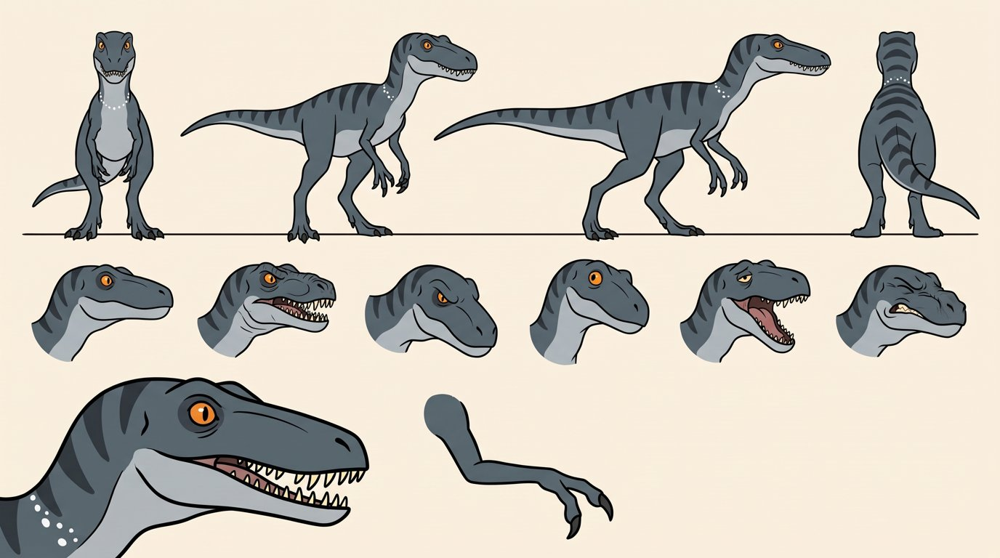
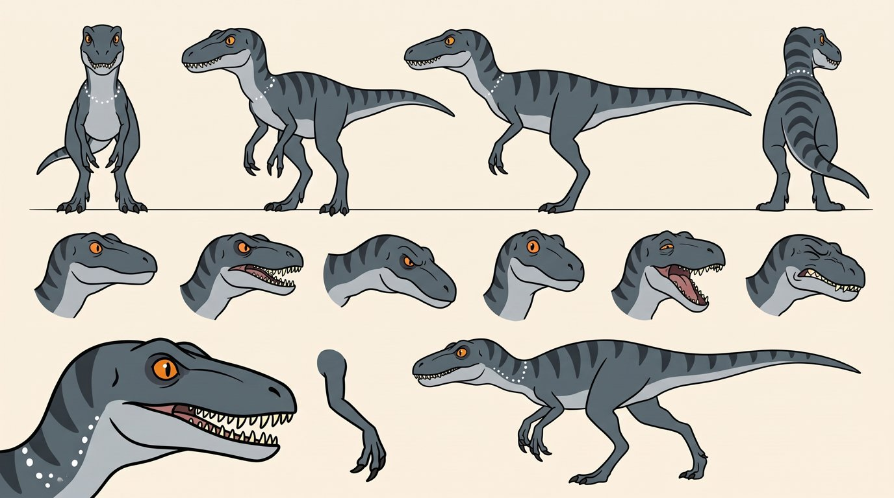
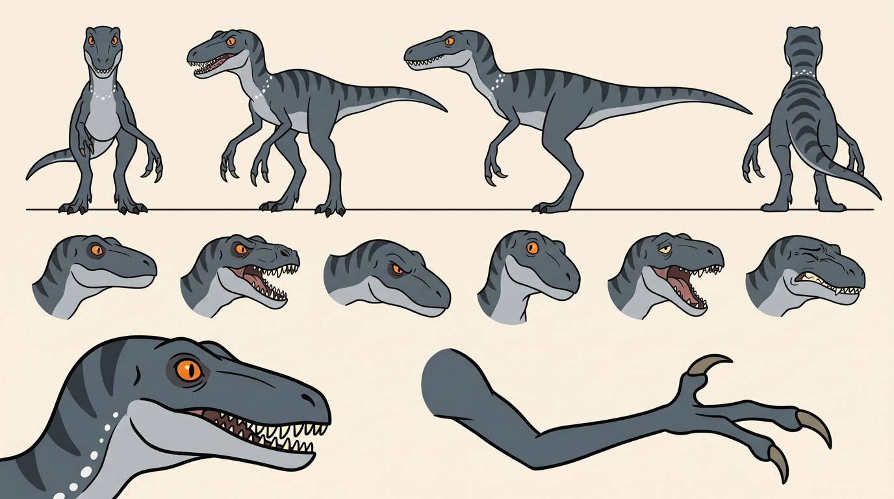
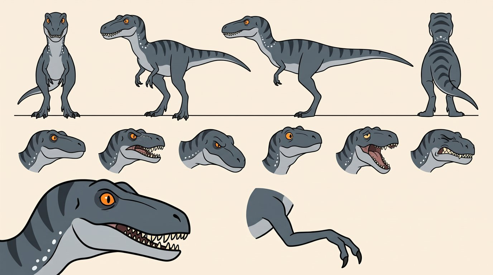
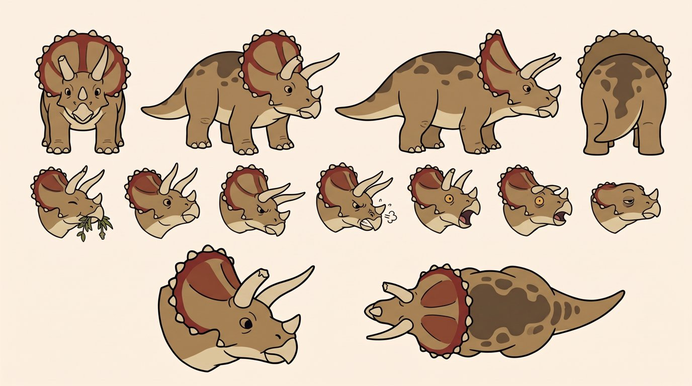
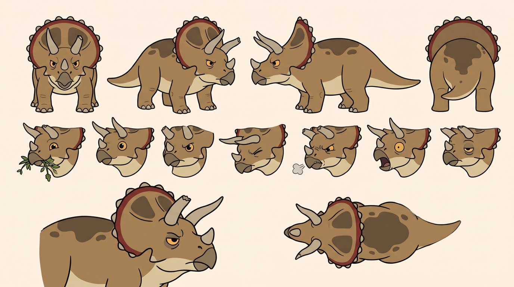
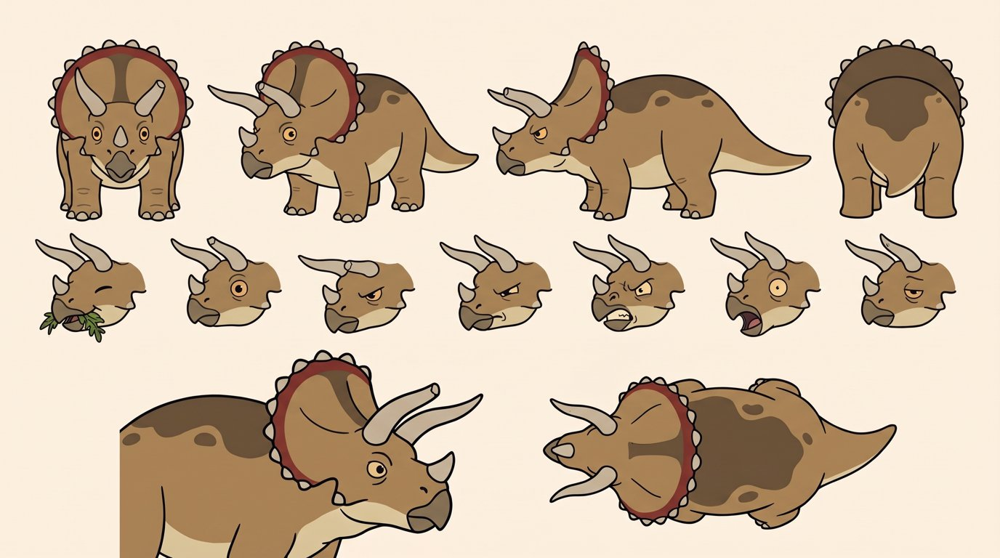
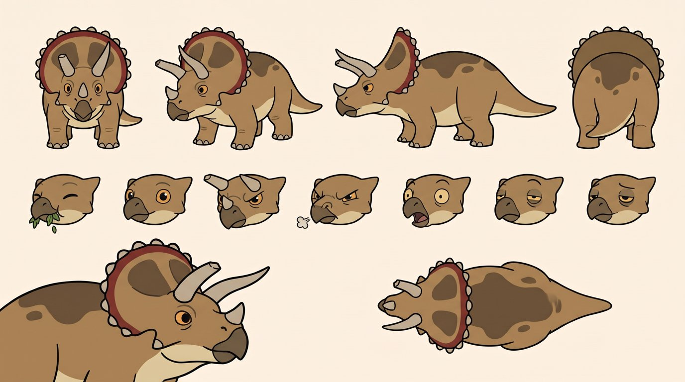
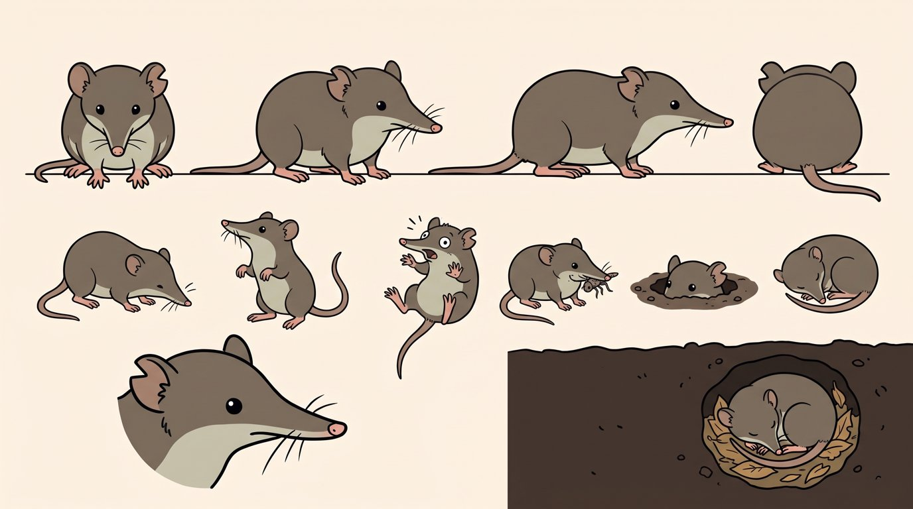
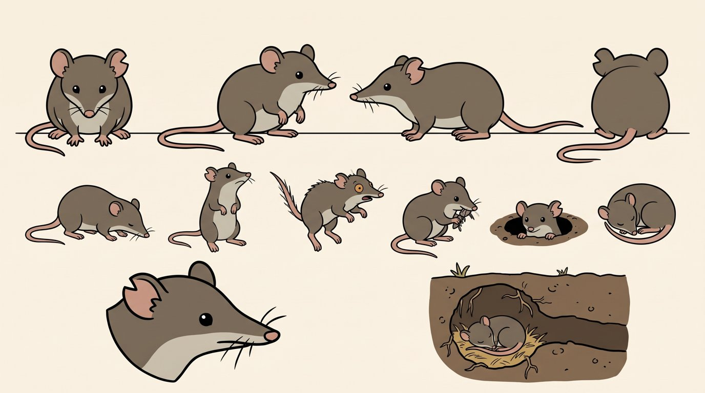

EP2 新設定圖：挑圖
第 13 步的檢查點（2026-11-17）。每隻 Flow 畫 4 張（2K），我逐張寫檢查結果、綠框是建議。點圖看大圖。你在對話裡回「矮暴龍 3、三角龍 1、鼩鼱 1」這樣就好；沒選的那隻要整段重寫 prompt 重畫。選定後改名 REF_…、放進參考圖資料夾，再做跟 HERO 的比例圖。
矮暴龍 REF_NANO
第 4 段遠方跟三角龍打架、第 10 段決鬥恐龍化石。要一眼跟 EP1 的青少年暴龍 TEEN 分得出來。
建議第 3 張：四張都有白斑項圈、灰藍底深色條紋、細長的腿和尖吻，跟 TEEN 分得開；第 3 張的前肢特寫最清楚是兩根大爪（prompt 要的「前肢比暴龍長、兩指大爪」）。

全身四角度、6 個表情、大頭、前肢特寫都有；前肢爪子看起來像三根。

第三列多畫了一隻沒要求的全身側面；前肢特寫偏短。

版面完整；前肢特寫清楚兩根大爪；全身圖前肢明顯較長。

版面完整；前肢特寫短而粗，不像長前肢。
prompt（中文對照）
做一張 16:9 橫式角色設定圖，畫同一隻成年矮暴龍（Nanotyrannus），用在穿越回恐龍時代的 2D 火柴人動畫。附上的兩張圖是同一個故事裡的成年暴龍 TREX 和青少年暴龍 TEEN，只拿來對照畫風；矮暴龍是另一種恐龍，一定要一眼就跟 TEEN 分得出來。畫風：扁平 2D 卡通，跟附圖完全一樣：米白背景、粗黑線、平塗色、卡通眼睛。固定特徵：成年、精瘦、身長約 5 公尺，像縮小又拉長的暴龍；頭比暴龍窄長、吻部尖，嘴裡牙齒又細又多；前肢比暴龍和 TEEN 明顯長，兩根手指有大爪子；腿又細又長，像短跑選手。顏色：石板灰藍 #5E6E78，背上一條條深色橫紋 #3B464D，肚子淺灰 #C9CED0，眼睛亮橘 #E07B2A。標記：脖子上一圈白色斑點。比例、條紋、斑點和顏色不能變；姿勢和表情可以變。大小：約 5 公尺長、700 公斤，只有成年暴龍的十分之一重；不要畫人。版面：第一列四個全身角度（正面、四分之三、正側面、背面）同一條地平線；第二列六個頭部表情，不要字：警戒、嘶吼、低頭準備撲、好奇歪頭、喘氣、被三角龍頂到的痛。第三列：一個放大的側臉，和一隻前肢的特寫。一致性：每格同一隻，不要多出的肢體、合併的格子、文字、標籤、logo、浮水印。
參考圖：REF_TREX、REF_TEEN
三角龍 REF_TRICERA
第 4 段跟矮暴龍打架、第 8 段逃難、第 9 段進山洞、第 10 段化石。
建議第 1 張：放大大頭特寫：第 1、2 張左角尖端有清楚的斷口（prompt 的固定標記）；第 3、4 張角尖只是平的，看不出缺角。第 1 張的大頭特寫最乾淨。

左角斷口清楚；表情列畫了 7 個（要 6 個，多 1 個）；骨盾俯視圖有。

左角斷口清楚；大頭特寫連著半個身體、被切邊；表情 7 個。

角尖平的，看不出缺角；表情 7 個。

角尖平的，看不出缺角；版面乾淨；表情 7 個。
prompt（中文對照）
做一張 16:9 橫式角色設定圖，畫同一隻成年三角龍，用在穿越回恐龍時代的 2D 火柴人動畫。附上的圖是同一個故事裡的甲龍 ANKY，只拿來對照畫風。畫風同 ANKY。固定特徵：又大又壯、四腳站立的成年三角龍，身長約 9 公尺；頭很大，頭後面一片短而厚、邊緣有一圈小突起的骨盾；額頭兩根長而往前彎的角、鼻子上一根短角；嘴巴是像鸚鵡一樣的喙。顏色：沙土棕 #A6825A，背上和骨盾上深棕斑塊 #6E5236，肚子淺米色 #DCC9A4，骨盾邊緣一圈暗紅 #8C3B2E，眼睛深棕。標記：左邊那根長角尖端缺了一小塊。比例、缺角和顏色不能變。大小：約 9 公尺長、跟公車一樣長；肩高約 3 公尺，將近成年人的兩倍；不要畫人。版面：第一列四個全身角度；第二列六個頭部表情（平靜吃草、警戒、低頭用角頂、生氣噴氣、受驚、累了）；第三列：放大的頭（看得到缺角）、一張從正上方看的骨盾。一致性同上。
參考圖：REF_ANKY 2026-11-17 第一次送 Flow 時寫的是「肩膀比成年人高一點」（錯，查核 #129：肩高 2.8～3.2 公尺）；之後已改正。
鼩鼱（哺乳類祖先） REF_SHREW
第 8 段鑽進地洞、地洞剖面、探頭；第 10 段「別吃牠」。
建議第 1 張：鼻子最尖長、最像鼩鼱（不像老鼠）；地洞剖面最清楚。耳朵缺口四張都有。小問題：缺口畫在看得到的那隻耳朵（臉朝右時那是左耳），跟 prompt 的「右耳」相反，但只要之後每格一致就好，以挑定的這張為準。

尖鼻、耳朵缺口、6 個動作、地洞剖面都有；版面最清楚。

受驚那格姿勢誇張、跑出格子；地洞剖面底色很暗。

大頭特寫是生氣的表情（prompt 沒要）；缺口在右耳（照 prompt）。

版面完整；鼻子較短、比較像老鼠。
prompt（中文對照）
做一張 16:9 橫式角色設定圖，畫同一隻小小的、像鼩鼱的早期哺乳動物，用在穿越回恐龍時代的 2D 火柴人動畫。附上的甲龍 ANKY 只拿來對照畫風。畫風同 ANKY。固定特徵：老鼠大小，身長約 8 公分（不含尾巴）；尖尖長長、會動的鼻子，小黑豆眼，小圓耳朵，全身短短的毛，細長的尾巴，四隻小腳有爪子會挖土。顏色：灰棕色毛 #7A6652，肚子淺色 #CDBFAE，粉紅鼻尖和腳 #E3A3A0。標記：右耳有一個小缺口。比例、缺口和顏色不能變。大小：只有手掌那麼小；不要畫人。版面：第一列四個全身角度；第二列六個表情（嗅聞、警戒站起來、受驚、嘴裡叼著一隻蟲、從洞口探頭、縮成一團睡覺）；第三列：放大的頭（看得到耳朵缺口），和牠鑽進地洞的剖面（洞裡乾淨，沒有字）。一致性同上。
參考圖：REF_ANKY 2026-11-17 第一次送 Flow 時寫 10 公分（查核 #130：偏大，一般 4～9 公分）；之後改 8 公分。